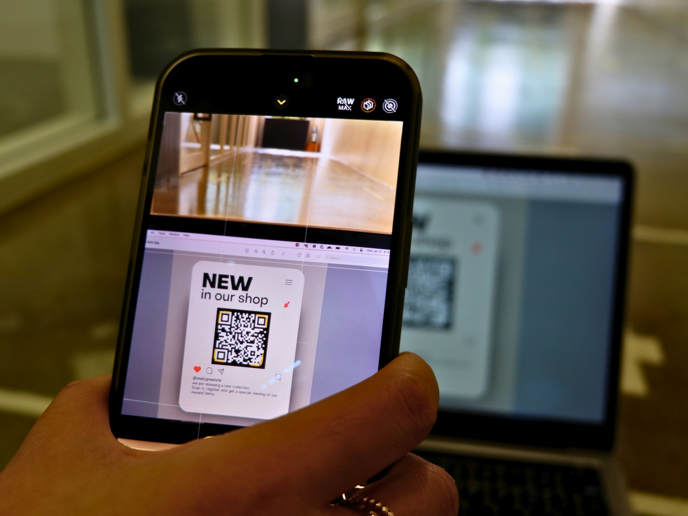
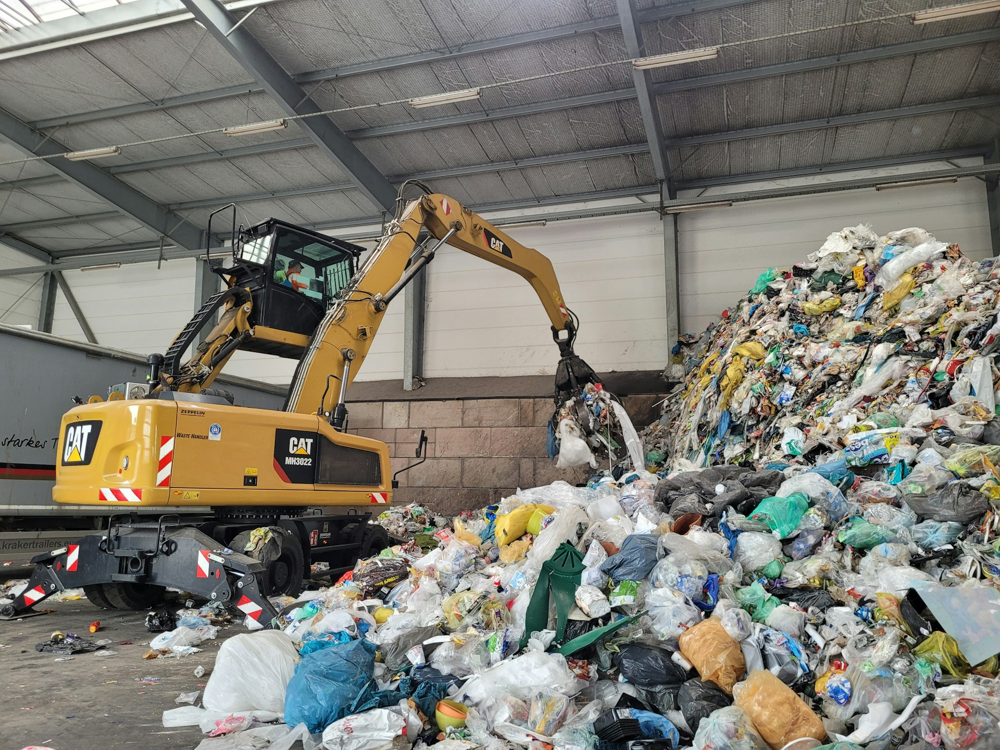
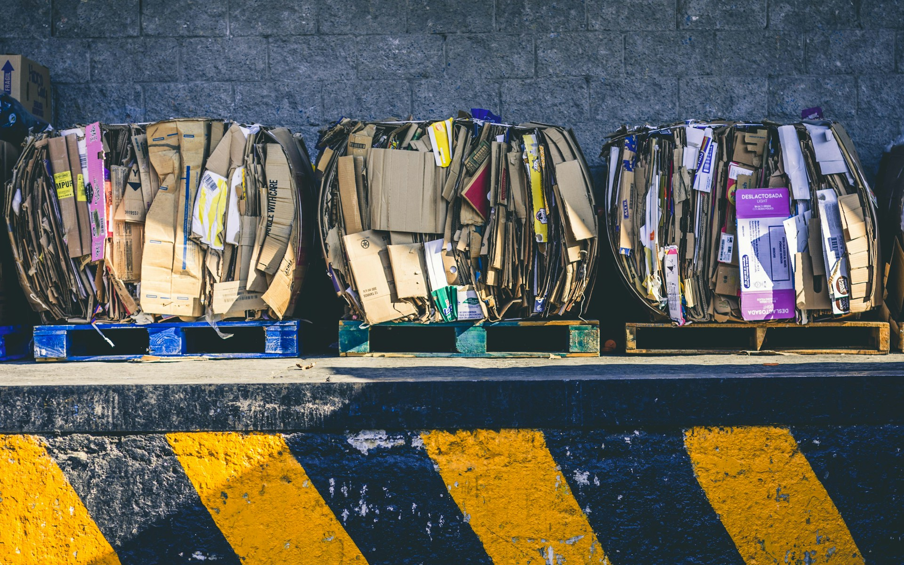
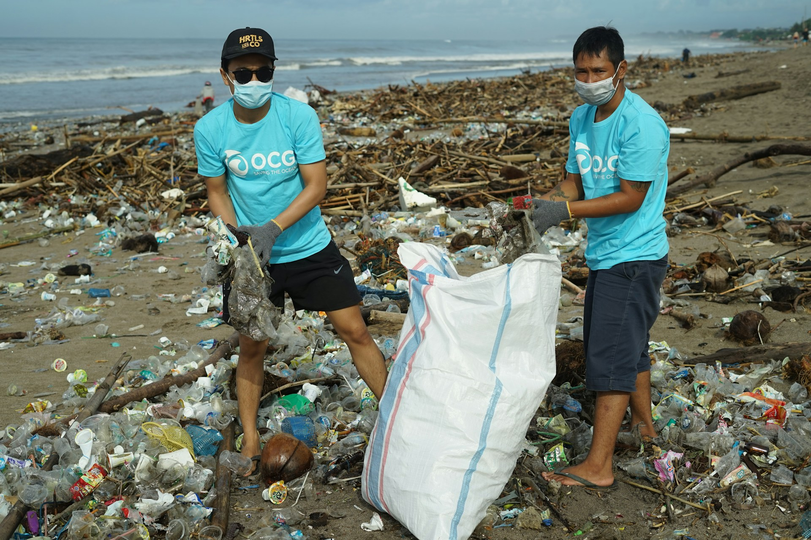
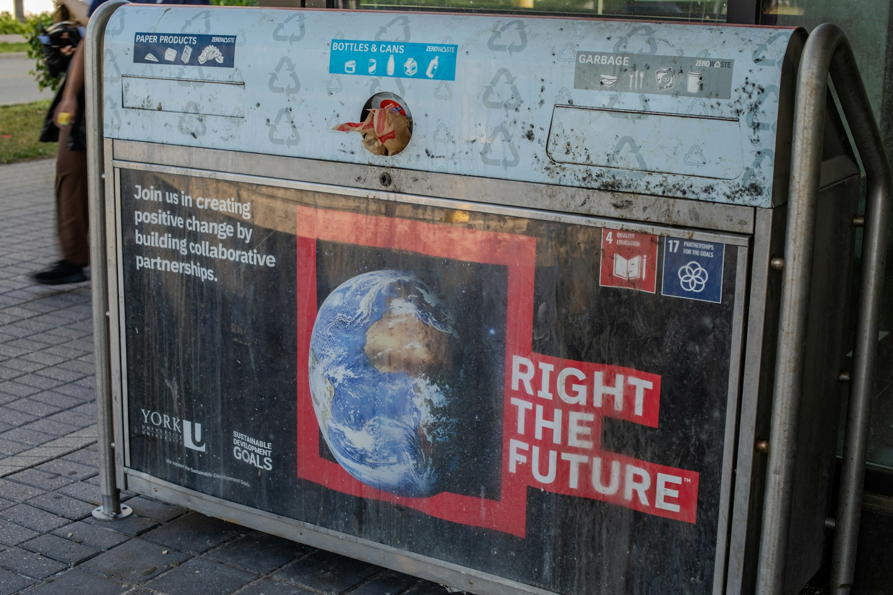
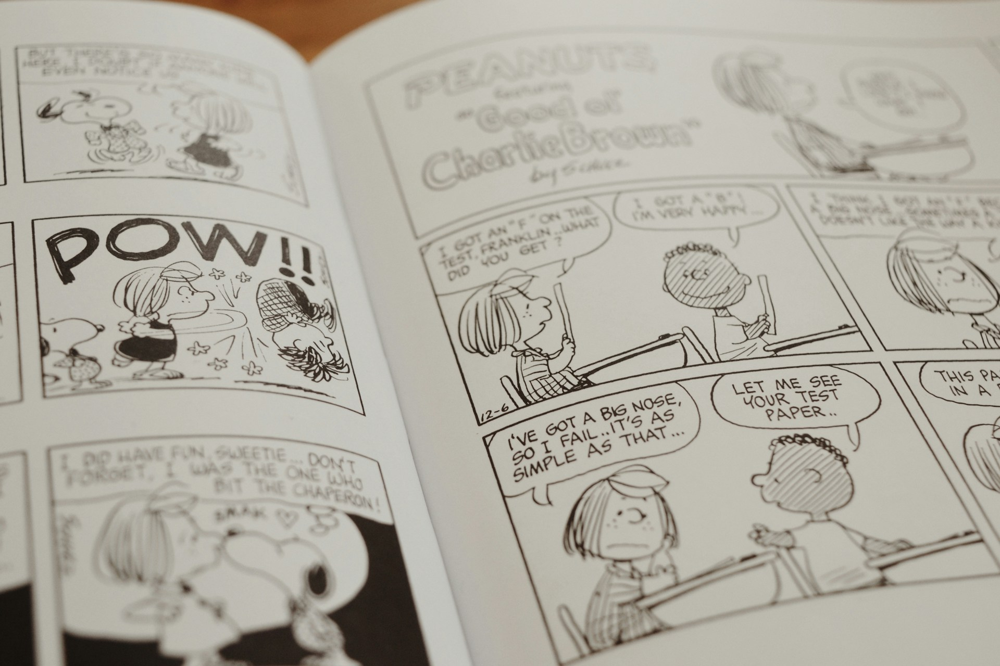
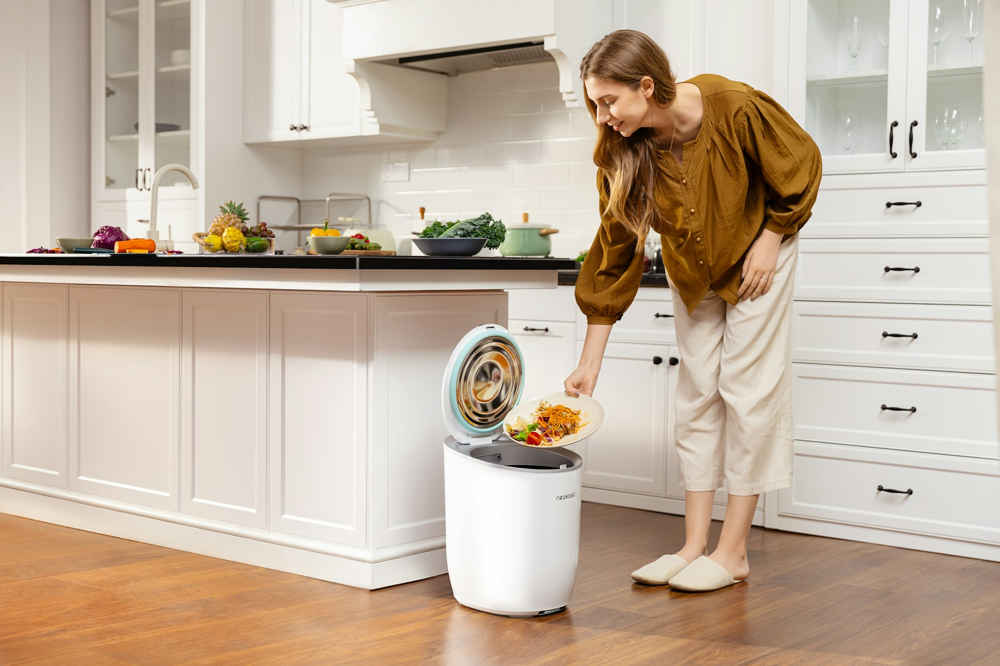

Website
87 kali dibuka
Sistem Informasi Lingkungan Sekolah
Website yang dirancang untuk membantu warga sekolah memahami pentingnya menjaga lingkungan melalui informasi, edukasi, dan pencatatan kegiatan lingkungan secara digital.

Raka Pratama
14 Januari 2026

Aplikasi
126 kali dibuka
Aplikasi Pencatatan Sampah Harian
Aplikasi sederhana untuk mencatat jumlah dan jenis sampah yang dihasilkan setiap hari sehingga pengguna dapat mengetahui kebiasaan mereka dalam menghasilkan sampah.

Shekei Laid
28 Februari 2026

Infografis
74 kali dibuka
Mengenal Jenis Sampah Rumah Tangga
Infografis edukatif yang menjelaskan berbagai jenis sampah rumah tangga serta cara sederhana untuk membedakan dan mengelolanya sebelum dibuang.

Made Aditya
7 Maret 2025

Video Edukasi
213 kali dibuka
Langkah Mudah Mengurangi Sampah
Video edukasi yang membahas berbagai kebiasaan sederhana untuk mengurangi produksi sampah dalam kehidupan sehari-hari mulai dari rumah hingga lingkungan sekolah.

Komang Dimas
21 April 2025
Website
98 kali dibuka
Dashboard Statistik Pengelolaan Sampah
Dashboard interaktif yang menampilkan data pengelolaan sampah dalam bentuk statistik sehingga pengguna dapat melihat perubahan jumlah sampah berdasarkan jenis dan waktu.
Alvin Mahendra
16 Juni 2026

Poster Digital
65 kali dibuka
Satu Langkah Untuk Bumi
Poster digital bertema lingkungan yang mengajak masyarakat untuk mulai melakukan tindakan kecil dalam mengurangi sampah dan menjaga kebersihan lingkungan sekitar.
Putri Maharani
3 September 2025

Komik Edukasi
157 kali dibuka
Petualangan Kecil Menjaga Lingkungan
Komik edukasi yang menggunakan cerita ringan dan karakter menarik untuk mengenalkan kebiasaan memilah sampah serta pentingnya menjaga kebersihan lingkungan.
Bagus Wiratama
12 November 2025

Proyek IoT
184 kali dibuka
Tempat Sampah Pintar Berbasis IoT
Proyek teknologi yang memanfaatkan sensor dan mikrokontroler untuk membantu memantau kondisi tempat sampah serta memberikan informasi secara otomatis kepada pengguna.
Yoga Saputra
25 Juli 2026